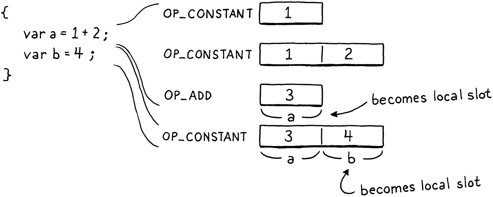

Local Variables
And as imagination bodies forth
The forms of things unknown, the poet’s pen
Turns them to shapes and gives to airy nothing
A local habitation and a name.William Shakespeare, A Midsummer Night’s Dream
The last chapter introduced variables to clox, but only of the global variety. In this chapter, we’ll extend that to support blocks, block scope, and local variables. In jlox, we managed to pack all of that and globals into one chapter. For clox, that’s two chapters worth of work partially because, frankly, everything takes more effort in C.
But an even more important reason is that our approach to local variables will be quite different from how we implemented globals. Global variables are late bound in Lox. “Late” in this context means “resolved after compile time”. That’s good for keeping the compiler simple, but not great for performance. Local variables are one of the most-used parts of a language. If locals are slow, everything is slow. So we want a strategy for local variables that’s as efficient as possible.
Fortunately, lexical scoping is here to help us. As the name implies, lexical scope means we can resolve a local variable just by looking at the text of the program—locals are not late bound. Any processing work we do in the compiler is work we don’t have to do at runtime, so our implementation of local variables will lean heavily on the compiler.
22 . 1Representing Local Variables
The nice thing about hacking on a programming language in modern times is there’s a long lineage of other languages to learn from. So how do C and Java manage their local variables? Why, on the stack, of course! They typically use the native stack mechanisms supported by the chip and OS. That’s a little too low level for us, but inside the virtual world of clox, we have our own stack we can use.
Right now, we only use it for holding on to temporaries—short-lived blobs
of data that we need to remember while computing an expression. As long as we
don’t get in the way of those, we can stuff our local variables onto the stack
too. This is great for performance. Allocating space for a new local requires
only incrementing the stackTop pointer, and freeing is likewise a decrement.
Accessing a variable from a known stack slot is an indexed array lookup.
We do need to be careful, though. The VM expects the stack to behave like, well, a stack. We have to be OK with allocating new locals only on the top of the stack, and we have to accept that we can discard a local only when nothing is above it on the stack. Also, we need to make sure temporaries don’t interfere.
Conveniently, the design of Lox is in harmony with these constraints. New locals are always created by declaration statements. Statements don’t nest inside expressions, so there are never any temporaries on the stack when a statement begins executing. Blocks are strictly nested. When a block ends, it always takes the innermost, most recently declared locals with it. Since those are also the locals that came into scope last, they should be on top of the stack where we need them.
Step through this example program and watch how the local variables come in and go out of scope:

See how they fit a stack perfectly? It seems that the stack will work for storing locals at runtime. But we can go further than that. Not only do we know that they will be on the stack, but we can even pin down precisely where they will be on the stack. Since the compiler knows exactly which local variables are in scope at any point in time, it can effectively simulate the stack during compilation and note where in the stack each variable lives.
We’ll take advantage of this by using these stack offsets as operands for the bytecode instructions that read and store local variables. This makes working with locals deliciously fast—as simple as indexing into an array.
There’s a lot of state we need to track in the compiler to make this whole thing go, so let’s get started there. In jlox, we used a linked chain of “environment” HashMaps to track which local variables were currently in scope. That’s sort of the classic, schoolbook way of representing lexical scope. For clox, as usual, we’re going a little closer to the metal. All of the state lives in a new struct.
} ParseRule;
add after struct ParseRule
typedef struct { Local locals[UINT8_COUNT]; int localCount; int scopeDepth; } Compiler;
Parser parser;
We have a simple, flat array of all locals that are in scope during each point in the compilation process. They are ordered in the array in the order that their declarations appear in the code. Since the instruction operand we’ll use to encode a local is a single byte, our VM has a hard limit on the number of locals that can be in scope at once. That means we can also give the locals array a fixed size.
#define DEBUG_TRACE_EXECUTION
#define UINT8_COUNT (UINT8_MAX + 1)
#endif
Back in the Compiler struct, the localCount field tracks how many locals are
in scope—how many of those array slots are in use. We also track the “scope
depth”. This is the number of blocks surrounding the current bit of code we’re
compiling.
Our Java interpreter used a chain of maps to keep each block’s variables separate from other blocks’. This time, we’ll simply number variables with the level of nesting where they appear. Zero is the global scope, one is the first top-level block, two is inside that, you get the idea. We use this to track which block each local belongs to so that we know which locals to discard when a block ends.
Each local in the array is one of these:
} ParseRule;
add after struct ParseRule
typedef struct { Token name; int depth; } Local;
typedef struct {
We store the name of the variable. When we’re resolving an identifier, we
compare the identifier’s lexeme with each local’s name to find a match. It’s
pretty hard to resolve a variable if you don’t know its name. The depth field
records the scope depth of the block where the local variable was declared.
That’s all the state we need for now.
This is a very different representation from what we had in jlox, but it still lets us answer all of the same questions our compiler needs to ask of the lexical environment. The next step is figuring out how the compiler gets at this state. If we were principled engineers, we’d give each function in the front end a parameter that accepts a pointer to a Compiler. We’d create a Compiler at the beginning and carefully thread it through each function call . . . but that would mean a lot of boring changes to the code we already wrote, so here’s a global variable instead:
Parser parser;
add after variable parser
Compiler* current = NULL;
Chunk* compilingChunk;
Here’s a little function to initialize the compiler:
add after emitConstant()
static void initCompiler(Compiler* compiler) { compiler->localCount = 0; compiler->scopeDepth = 0; current = compiler; }
When we first start up the VM, we call it to get everything into a clean state.
initScanner(source);
in compile()
Compiler compiler; initCompiler(&compiler);
compilingChunk = chunk;
Our compiler has the data it needs, but not the operations on that data. There’s no way to create and destroy scopes, or add and resolve variables. We’ll add those as we need them. First, let’s start building some language features.
22 . 2Block Statements
Before we can have any local variables, we need some local scopes. These come from two things: function bodies and blocks. Functions are a big chunk of work that we’ll tackle in a later chapter, so for now we’re only going to do blocks. As usual, we start with the syntax. The new grammar we’ll introduce is:
statement → exprStmt | printStmt | block ; block → "{" declaration* "}" ;
Blocks are a kind of statement, so the rule for them goes in the statement
production. The corresponding code to compile one looks like this:
if (match(TOKEN_PRINT)) {
printStatement();
in statement()
} else if (match(TOKEN_LEFT_BRACE)) { beginScope(); block(); endScope();
} else {
After parsing the initial curly brace, we use this helper function to compile the rest of the block:
add after expression()
static void block() { while (!check(TOKEN_RIGHT_BRACE) && !check(TOKEN_EOF)) { declaration(); } consume(TOKEN_RIGHT_BRACE, "Expect '}' after block."); }
It keeps parsing declarations and statements until it hits the closing brace. As we do with any loop in the parser, we also check for the end of the token stream. This way, if there’s a malformed program with a missing closing curly, the compiler doesn’t get stuck in a loop.
Executing a block simply means executing the statements it contains, one after the other, so there isn’t much to compiling them. The semantically interesting thing blocks do is create scopes. Before we compile the body of a block, we call this function to enter a new local scope:
add after endCompiler()
static void beginScope() { current->scopeDepth++; }
In order to “create” a scope, all we do is increment the current depth. This is
certainly much faster than jlox, which allocated an entire new HashMap for
each one. Given beginScope(), you can probably guess what endScope() does.
add after beginScope()
static void endScope() { current->scopeDepth--; }
That’s it for blocks and scopes—more or less—so we’re ready to stuff some variables into them.
22 . 3Declaring Local Variables
Usually we start with parsing here, but our compiler already supports parsing
and compiling variable declarations. We’ve got var statements, identifier
expressions and assignment in there now. It’s just that the compiler assumes
all variables are global. So we don’t need any new parsing support, we just need
to hook up the new scoping semantics to the existing code.

Variable declaration parsing begins in varDeclaration() and relies on a couple
of other functions. First, parseVariable() consumes the identifier token for
the variable name, adds its lexeme to the chunk’s constant table as a string,
and then returns the constant table index where it was added. Then, after
varDeclaration() compiles the initializer, it calls defineVariable() to emit
the bytecode for storing the variable’s value in the global variable hash table.
Both of those helpers need a few changes to support local variables. In
parseVariable(), we add:
consume(TOKEN_IDENTIFIER, errorMessage);
in parseVariable()
declareVariable(); if (current->scopeDepth > 0) return 0;
return identifierConstant(&parser.previous);
First, we “declare” the variable. I’ll get to what that means in a second. After that, we exit the function if we’re in a local scope. At runtime, locals aren’t looked up by name. There’s no need to stuff the variable’s name into the constant table, so if the declaration is inside a local scope, we return a dummy table index instead.
Over in defineVariable(), we need to emit the code to store a local variable
if we’re in a local scope. It looks like this:
static void defineVariable(uint8_t global) {
in defineVariable()
if (current->scopeDepth > 0) { return; }
emitBytes(OP_DEFINE_GLOBAL, global);
Wait, what? Yup. That’s it. There is no code to create a local variable at
runtime. Think about what state the VM is in. It has already executed the code
for the variable’s initializer (or the implicit nil if the user omitted an
initializer), and that value is sitting right on top of the stack as the only
remaining temporary. We also know that new locals are allocated at the top of
the stack . . . right where that value already is. Thus, there’s nothing to do. The
temporary simply becomes the local variable. It doesn’t get much more
efficient than that.

OK, so what’s “declaring” about? Here’s what that does:
add after identifierConstant()
static void declareVariable() { if (current->scopeDepth == 0) return; Token* name = &parser.previous; addLocal(*name); }
This is the point where the compiler records the existence of the variable. We only do this for locals, so if we’re in the top-level global scope, we just bail out. Because global variables are late bound, the compiler doesn’t keep track of which declarations for them it has seen.
But for local variables, the compiler does need to remember that the variable exists. That’s what declaring it does—it adds it to the compiler’s list of variables in the current scope. We implement that using another new function.
add after identifierConstant()
static void addLocal(Token name) { Local* local = ¤t->locals[current->localCount++]; local->name = name; local->depth = current->scopeDepth; }
This initializes the next available Local in the compiler’s array of variables. It stores the variable’s name and the depth of the scope that owns the variable.
Our implementation is fine for a correct Lox program, but what about invalid code? Let’s aim to be robust. The first error to handle is not really the user’s fault, but more a limitation of the VM. The instructions to work with local variables refer to them by slot index. That index is stored in a single-byte operand, which means the VM only supports up to 256 local variables in scope at one time.
If we try to go over that, not only could we not refer to them at runtime, but the compiler would overwrite its own locals array, too. Let’s prevent that.
static void addLocal(Token name) {
in addLocal()
if (current->localCount == UINT8_COUNT) { error("Too many local variables in function."); return; }
Local* local = ¤t->locals[current->localCount++];
The next case is trickier. Consider:
{
var a = "first";
var a = "second";
}
At the top level, Lox allows redeclaring a variable with the same name as a previous declaration because that’s useful for the REPL. But inside a local scope, that’s a pretty weird thing to do. It’s likely to be a mistake, and many languages, including our own Lox, enshrine that assumption by making this an error.
Note that the above program is different from this one:
{
var a = "outer";
{
var a = "inner";
}
}
It’s OK to have two variables with the same name in different scopes, even when the scopes overlap such that both are visible at the same time. That’s shadowing, and Lox does allow that. It’s only an error to have two variables with the same name in the same local scope.
We detect that error like so:
Token* name = &parser.previous;
in declareVariable()
for (int i = current->localCount - 1; i >= 0; i--) { Local* local = ¤t->locals[i]; if (local->depth != -1 && local->depth < current->scopeDepth) { break; } if (identifiersEqual(name, &local->name)) { error("Already a variable with this name in this scope."); } }
addLocal(*name); }
Local variables are appended to the array when they’re declared, which means the current scope is always at the end of the array. When we declare a new variable, we start at the end and work backward, looking for an existing variable with the same name. If we find one in the current scope, we report the error. Otherwise, if we reach the beginning of the array or a variable owned by another scope, then we know we’ve checked all of the existing variables in the scope.
To see if two identifiers are the same, we use this:
add after identifierConstant()
static bool identifiersEqual(Token* a, Token* b) { if (a->length != b->length) return false; return memcmp(a->start, b->start, a->length) == 0; }
Since we know the lengths of both lexemes, we check that first. That will fail
quickly for many non-equal strings. If the lengths are
the same, we check the characters using memcmp(). To get to memcmp(), we
need an include.
#include <stdlib.h>
#include <string.h>
#include "common.h"
With this, we’re able to bring variables into being. But, like ghosts, they linger on beyond the scope where they are declared. When a block ends, we need to put them to rest.
current->scopeDepth--;
in endScope()
while (current->localCount > 0 && current->locals[current->localCount - 1].depth > current->scopeDepth) { emitByte(OP_POP); current->localCount--; }
}
When we pop a scope, we walk backward through the local array looking for any variables declared at the scope depth we just left. We discard them by simply decrementing the length of the array.
There is a runtime component to this too. Local variables occupy slots on the
stack. When a local variable goes out of scope, that slot is no longer needed
and should be freed. So, for each variable that we discard, we also emit an
OP_POP instruction to pop it from the stack.
22 . 4Using Locals
We can now compile and execute local variable declarations. At runtime, their values are sitting where they should be on the stack. Let’s start using them. We’ll do both variable access and assignment at the same time since they touch the same functions in the compiler.
We already have code for getting and setting global variables, and—like good little software engineers—we want to reuse as much of that existing code as we can. Something like this:
static void namedVariable(Token name, bool canAssign) {
in namedVariable()
replace 1 line
uint8_t getOp, setOp; int arg = resolveLocal(current, &name); if (arg != -1) { getOp = OP_GET_LOCAL; setOp = OP_SET_LOCAL; } else { arg = identifierConstant(&name); getOp = OP_GET_GLOBAL; setOp = OP_SET_GLOBAL; }
if (canAssign && match(TOKEN_EQUAL)) {
Instead of hardcoding the bytecode instructions emitted for variable access and assignment, we use a couple of C variables. First, we try to find a local variable with the given name. If we find one, we use the instructions for working with locals. Otherwise, we assume it’s a global variable and use the existing bytecode instructions for globals.
A little further down, we use those variables to emit the right instructions. For assignment:
if (canAssign && match(TOKEN_EQUAL)) {
expression();
in namedVariable()
replace 1 line
emitBytes(setOp, (uint8_t)arg);
} else {
And for access:
emitBytes(setOp, (uint8_t)arg);
} else {
in namedVariable()
replace 1 line
emitBytes(getOp, (uint8_t)arg);
}
The real heart of this chapter, the part where we resolve a local variable, is here:
add after identifiersEqual()
static int resolveLocal(Compiler* compiler, Token* name) { for (int i = compiler->localCount - 1; i >= 0; i--) { Local* local = &compiler->locals[i]; if (identifiersEqual(name, &local->name)) { return i; } } return -1; }
For all that, it’s straightforward. We walk the list of locals that are currently in scope. If one has the same name as the identifier token, the identifier must refer to that variable. We’ve found it! We walk the array backward so that we find the last declared variable with the identifier. That ensures that inner local variables correctly shadow locals with the same name in surrounding scopes.
At runtime, we load and store locals using the stack slot index, so that’s what the compiler needs to calculate after it resolves the variable. Whenever a variable is declared, we append it to the locals array in Compiler. That means the first local variable is at index zero, the next one is at index one, and so on. In other words, the locals array in the compiler has the exact same layout as the VM’s stack will have at runtime. The variable’s index in the locals array is the same as its stack slot. How convenient!
If we make it through the whole array without finding a variable with the given
name, it must not be a local. In that case, we return -1 to signal that it
wasn’t found and should be assumed to be a global variable instead.
22 . 4 . 1Interpreting local variables
Our compiler is emitting two new instructions, so let’s get them working. First is loading a local variable:
OP_POP,
in enum OpCode
OP_GET_LOCAL,
OP_GET_GLOBAL,
And its implementation:
case OP_POP: pop(); break;
in run()
case OP_GET_LOCAL: { uint8_t slot = READ_BYTE(); push(vm.stack[slot]); break; }
case OP_GET_GLOBAL: {
It takes a single-byte operand for the stack slot where the local lives. It loads the value from that index and then pushes it on top of the stack where later instructions can find it.
Next is assignment:
OP_GET_LOCAL,
in enum OpCode
OP_SET_LOCAL,
OP_GET_GLOBAL,
You can probably predict the implementation.
}
in run()
case OP_SET_LOCAL: { uint8_t slot = READ_BYTE(); vm.stack[slot] = peek(0); break; }
case OP_GET_GLOBAL: {
It takes the assigned value from the top of the stack and stores it in the stack slot corresponding to the local variable. Note that it doesn’t pop the value from the stack. Remember, assignment is an expression, and every expression produces a value. The value of an assignment expression is the assigned value itself, so the VM just leaves the value on the stack.
Our disassembler is incomplete without support for these two new instructions.
return simpleInstruction("OP_POP", offset);
in disassembleInstruction()
case OP_GET_LOCAL: return byteInstruction("OP_GET_LOCAL", chunk, offset); case OP_SET_LOCAL: return byteInstruction("OP_SET_LOCAL", chunk, offset);
case OP_GET_GLOBAL:
The compiler compiles local variables to direct slot access. The local variable’s name never leaves the compiler to make it into the chunk at all. That’s great for performance, but not so great for introspection. When we disassemble these instructions, we can’t show the variable’s name like we could with globals. Instead, we just show the slot number.
add after simpleInstruction()
static int byteInstruction(const char* name, Chunk* chunk, int offset) { uint8_t slot = chunk->code[offset + 1]; printf("%-16s %4d\n", name, slot); return offset + 2; }
22 . 4 . 2Another scope edge case
We already sunk some time into handling a couple of weird edge cases around scopes. We made sure shadowing works correctly. We report an error if two variables in the same local scope have the same name. For reasons that aren’t entirely clear to me, variable scoping seems to have a lot of these wrinkles. I’ve never seen a language where it feels completely elegant.
We’ve got one more edge case to deal with before we end this chapter. Recall this strange beastie we first met in jlox’s implementation of variable resolution:
{
var a = "outer";
{
var a = a;
}
}
We slayed it then by splitting a variable’s declaration into two phases, and we’ll do that again here:

As soon as the variable declaration begins—in other words, before its initializer—the name is declared in the current scope. The variable exists, but in a special “uninitialized” state. Then we compile the initializer. If at any point in that expression we resolve an identifier that points back to this variable, we’ll see that it is not initialized yet and report an error. After we finish compiling the initializer, we mark the variable as initialized and ready for use.
To implement this, when we declare a local, we need to indicate the
“uninitialized” state somehow. We could add a new field to Local, but let’s be a
little more parsimonious with memory. Instead, we’ll set the variable’s scope
depth to a special sentinel value, -1.
local->name = name;
in addLocal()
replace 1 line
local->depth = -1;
}
Later, once the variable’s initializer has been compiled, we mark it initialized.
if (current->scopeDepth > 0) {
in defineVariable()
markInitialized();
return; }
That is implemented like so:
add after parseVariable()
static void markInitialized() { current->locals[current->localCount - 1].depth = current->scopeDepth; }
So this is really what “declaring” and “defining” a variable means in the compiler. “Declaring” is when the variable is added to the scope, and “defining” is when it becomes available for use.
When we resolve a reference to a local variable, we check the scope depth to see if it’s fully defined.
if (identifiersEqual(name, &local->name)) {
in resolveLocal()
if (local->depth == -1) { error("Can't read local variable in its own initializer."); }
return i;
If the variable has the sentinel depth, it must be a reference to a variable in its own initializer, and we report that as an error.
That’s it for this chapter! We added blocks, local variables, and real, honest-to-God lexical scoping. Given that we introduced an entirely different runtime representation for variables, we didn’t have to write a lot of code. The implementation ended up being pretty clean and efficient.
You’ll notice that almost all of the code we wrote is in the compiler. Over in the runtime, it’s just two little instructions. You’ll see this as a continuing trend in clox compared to jlox. One of the biggest hammers in the optimizer’s toolbox is pulling work forward into the compiler so that you don’t have to do it at runtime. In this chapter, that meant resolving exactly which stack slot every local variable occupies. That way, at runtime, no lookup or resolution needs to happen.
Challenges
-
Our simple local array makes it easy to calculate the stack slot of each local variable. But it means that when the compiler resolves a reference to a variable, we have to do a linear scan through the array.
Come up with something more efficient. Do you think the additional complexity is worth it?
-
How do other languages handle code like this:
var a = a;
What would you do if it was your language? Why?
-
Many languages make a distinction between variables that can be reassigned and those that can’t. In Java, the
finalmodifier prevents you from assigning to a variable. In JavaScript, a variable declared withletcan be assigned, but one declared usingconstcan’t. Swift treatsletas single-assignment and usesvarfor assignable variables. Scala and Kotlin usevalandvar.Pick a keyword for a single-assignment variable form to add to Lox. Justify your choice, then implement it. An attempt to assign to a variable declared using your new keyword should cause a compile error.
-
Extend clox to allow more than 256 local variables to be in scope at a time.